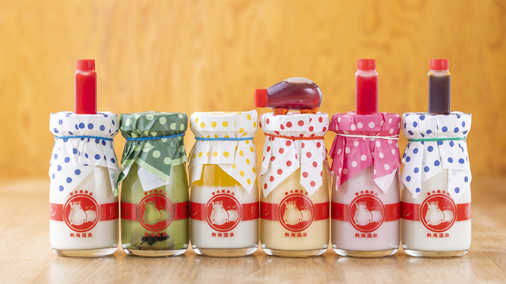
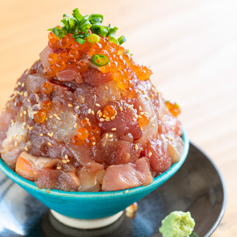

熱海ばたーあんパンまんじゅう

📍 アクセス
熱海駅から徒歩2分（熱海仲見世商店街）
💡 特徴
創業明治四年の「又一庵」が手掛ける逸品。パンのような饅頭生地で、粒あんとバターを包み込んでいます。甘じょっぱさがクセになります！
🗺️ 熱海駅からのルート熱海プリン

📍 アクセス
熱海駅から徒歩3分（仲見世通り商店街近く）。
💡 特徴
カバのマークが目印！温泉卵を使用したり、少し塩を効かせたりと、熱海温泉ならではのこだわりが詰まったとろけるプリンです。
🗺️ 熱海駅からのルート海鮮丼（熱海銀座おさかな食堂）

📍 アクセス
JR熱海駅から徒歩約15分（熱海銀座商店街）。
💡 特徴
ランチは豪華海鮮丼、ディナーは海鮮居酒屋。「熱海らしさ」をコンセプトに、新鮮な魚介を山盛りにした贅沢な丼が楽しめます。
🗺️ 熱海駅からのルート